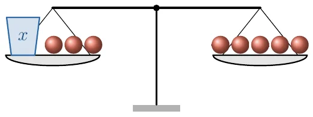

- បកស្រាយចំណោទជាសមីការដឺក្រេទីមួយមានមួយអញ្ញាត
- ដោះស្រាយសមីការដឺក្រេទីមួយមានមួយអញ្ញាត ឬរកឫសនៃសមីការ
- ដោះស្រាយចំណោទសមីការដឺក្រេទីមួយមានមួយអញ្ញាត ។
1. សញ្ញាណសមីការដឺក្រេទីមួយមានមួយអញ្ញាត
ឧបមាថានៅក្នុងស្រុកមួយមានសាលាបឋមសិក្សាចំនួន 5 នៅឆ្នាំ 2005 លុះមកដល់ឆ្នាំ 2008 ចំនួនសាលាបឋមសិក្សាកើនដល់ 8 សាលា ។ គេចង់ដឹងថាតើចំនួនសាលាដែលបានសាងសង់ចន្លោះឆ្នាំ 2005 និងឆ្នាំ 2008 មានចំនួនប៉ុន្មាន?
បើគេតាងអញ្ញាត \(\displaystyle x\) ជាចំនួនសាលាបឋមសិក្សាដែលគេបានសាងសង់ចន្លោះឆ្នាំ 2005 និងឆ្នាំ 2008 នោះគេបានកន្សោមពីជគណិត \(\displaystyle 5 + x = 8\) ។ កន្សោមនេះ ហៅថាសមីការដឺក្រេទីមួយមានមួយអញ្ញាត (\(\displaystyle x\) ជាអញ្ញាត) ។
\(\displaystyle x + 3 = 5\) ជាសមីការដឺក្រេទីមួយមានមួយអញ្ញាតដែលមាន \(\displaystyle x\) ជាអញ្ញាត ។

ជាទូទៅ កន្សោមពីជគណិតមានទម្រង់ \(\displaystyle ax + b = c\) ដែល \(\displaystyle a\), \(\displaystyle b\) និង \(\displaystyle c\) ជាចំនួនថេរ ហើយ \(\displaystyle a \neq 0\) ហៅថា សមីការដឺក្រេទីមួយមានមួយអញ្ញាត \(\displaystyle x\) ។
2. ឫសនៃសមីការដឺក្រេទីមួយមានមួយអញ្ញាត
គេមានសមីការ \(\displaystyle x + 4 = 7\) ។ តើមានតម្លៃលេខនៃ \(\displaystyle x\) ណាដែលនាំឱ្យអង្គទាំងពីរនៃសមីការមានតម្លៃលេខស្មើគ្នា ?
បើ \(\displaystyle x = 0\) គេបាន \(\displaystyle 0 + 4\) តូចជាង 7
\(\displaystyle x = 1\) គេបាន \(\displaystyle 1 + 4\) តូចជាង 7
\(\displaystyle x = 2\) គេបាន \(\displaystyle 2 + 4\) តូចជាង 7
\(\displaystyle x = 3\) គេបាន \(\displaystyle 3 + 4\) ស្មើនឹង 7
\(\displaystyle x = 4\) គេបាន \(\displaystyle 4 + 4\) ធំជាង 7 ។
តម្លៃ \(\displaystyle x = 3\) ធ្វើឱ្យអង្គទាំងពីរនៃសមីការមានតម្លៃលេខស្មើគ្នា គេថា \(\displaystyle x = 3\) ជាឫស ឬជាចម្លើយនៃសមីការ \(\displaystyle x + 4 = 7\) ។
ក្នុងចំណោមលេខ 12, 10 និង 8 តើតម្លៃលេខណាមួយជាចម្លើយនៃសមីការ \(\displaystyle 86 + x = 94\) ។
ផ្ទៀងផ្ទាត់បើ \(\displaystyle x = 12\) គេបាន \(\displaystyle 86 + 12 = 94\) (ជំនួស \(\displaystyle x\) ស្មើនឹង 12)
\(\displaystyle 98 = 94\) មិនពិត
ដូចនេះ \(\displaystyle x = 12\) មិនមែនជាឫសនៃសមីការ \(\displaystyle 86 + x = 94\) ។
ផ្ទៀងផ្ទាត់បើ \(\displaystyle x = 10\) គេបាន \(\displaystyle 86 + 10 = 94\) (ជំនួស \(\displaystyle x\) ស្មើនឹង 10)
\(\displaystyle 96 = 94\) មិនពិត
ដូចនេះ \(\displaystyle x = 10\) មិនមែនជាឫសនៃសមីការ \(\displaystyle 86 + 10 = 94\) ។
ផ្ទៀងផ្ទាត់បើ \(\displaystyle x = 8\) គេបាន \(\displaystyle 86 + 8 = 94\) (ជំនួស \(\displaystyle x\) ស្មើនឹង 8)
\(\displaystyle 94 = 94\) ពិត
ដូចនេះ \(\displaystyle x = 8\) ជាឫសនៃសមីការ \(\displaystyle 86 + x = 94\) ។
- គេមានតម្លៃ \(\displaystyle x\) ស្មើនឹង 52, 42 និង 24 ។ តើតម្លៃ \(\displaystyle x\) ណាដែលជាឫសនៃសមីការ \(\displaystyle x - 14 = 38\) ។
- រកឫសនៃសមីការ \(\displaystyle 5x = 100\) ។
3. ដោះស្រាយសមីការដឺក្រេទីមួយមានមួយអញ្ញាត
3.1 ដោះស្រាយសមីការដោយប្រើវិធីបូក ឬដក
គេមានសមភាព \(\displaystyle 5 = 5\) ។
គេបាន \(\displaystyle 5 + 2 = 5 + 2\) (ថែម 2 លើអង្គទាំងពីរ)
\(\displaystyle 7 = 7\) ។
គេមានសមភាព \(\displaystyle 5 = 5\) ។
គេបាន \(\displaystyle 5 - 2 = 5 - 2\) (ដក 2 ពីអង្គទាំងពីរ)
\(\displaystyle 3 = 3\) ។
ជាទូទៅ បើគេថែម ឬដកចំនួនដូចគ្នានៅអង្គទាំងពីរនៃសមភាព ឬសមីការ នោះអង្គទាំងពីរនៃសមភាព ឬសមីការនៅតែស្មើគ្នាដដែល ។
គេមាន \(\displaystyle a\), \(\displaystyle b\) និង \(\displaystyle c\) ជាចំនួនថេរ បើ \(\displaystyle a = b\) នោះ \(\displaystyle a \pm c = b \pm c\) ។
គេអាចប្រើលក្ខណៈវិធីបូក ឬដកនៃសមភាព ឬសមីការខាងលើ ដើម្បីដោះស្រាយសមីការដឺក្រេទីមួយមានមួយអញ្ញាត ។
ដោះស្រាយសមីការ \(\displaystyle x - 2 = 1\) ។
តាងអញ្ញាត \(\displaystyle x\) ដោយរូបកែវ ។ គេដាក់រូបកែវមួយតាងឱ្យ \(\displaystyle x\) និងឃ្លីដកចំនួន 2 តាងឱ្យ \(\displaystyle (-2)\) នៅអង្គទីមួយ ហើយដាក់ឃ្លីបូកចំនួន 1 តាងឱ្យ \(\displaystyle (+1)\) នៅអង្គទីពីរ ។ អង្គទាំងពីរស្មើគ្នា (រូបខាងស្តាំ) ។
ដើម្បីឱ្យបានអង្គទីមួយនៅសល់តែកែវ គេត្រូវថែមឃ្លីបូកចំនួន 2 លើអង្គទាំងពីរនៃសមីការ ។ (រូបខាងស្តាំ) ។
ដោយ \(\displaystyle \ominus\oplus\) ស្មើនឹងសូន្យ នោះនៅសល់តែរូបកែវមួយគឺ ជាអញ្ញាត \(\displaystyle x\) ដែលត្រូវរក ។ (រូបខាងស្តាំ)
ផ្ទៀងផ្ទាត់ \(\displaystyle x - 2 = 1\)
\(\displaystyle 3 - 2 = 1\) (ជំនួស \(\displaystyle x = 3\))
\(\displaystyle 1 = 1\) ពិត ។
ដូចនេះ \(\displaystyle x = 3\) ជាឫសនៃសមីការ ។
ដោះស្រាយសមីការ \(\displaystyle x + 2 = 3\) ។
តាងអញ្ញាត \(\displaystyle x\) ដោយរូបកែវ ។ គេដាក់រូបកែវមួយតាងឱ្យ \(\displaystyle x\) និងឃ្លីបូកចំនួន 2 តាងឱ្យ \(\displaystyle +2\) នៅអង្គទីមួយ ហើយដាក់ឃ្លីបូកចំនួន 3 តាងឱ្យ \(\displaystyle +3\) នៅអង្គទីពីរ ។ អង្គទាំងពីរស្មើគ្នា (រូបខាងស្តាំ) ។
ដើម្បីឱ្យបានអង្គទីមួយនៅសល់តែកែវ គេត្រូវយកឃ្លីបូកចំនួន 2 ចេញពីអង្គទាំងពីរនៃសមីការ ឬត្រូវថែមឃ្លីដកចំនួន 2 តាងឱ្យ \(\displaystyle (-2)\) លើអង្គទាំងពីរនៃសមីការ (រូបខាងស្តាំ) ។
ដោយ \(\displaystyle \ominus\oplus\) ស្មើនឹងសូន្យ ។ គេនៅសល់តែរូបកែវមួយគឺ ជាអញ្ញាត \(\displaystyle x\) ដែលត្រូវរក ។
ផ្ទៀងផ្ទាត់ \(\displaystyle x + 2 = 3\)
\(\displaystyle 1 + 2 = 3\) (ជំនួស \(\displaystyle x = 1\))
\(\displaystyle 3 = 3\) ពិត
ដូចនេះ \(\displaystyle x = 1\) ជាឫសនៃសមីការ ។
ក្នុងការអនុវត្តគេអាចលើកតួពីអង្គម្ខាង ទៅអង្គម្ខាងទៀតដោយប្ដូរសញ្ញាតួនោះ ។
ដោះស្រាយសមីការ \(\displaystyle 8 - (x + 2) = 4\) ។
ដូចនេះ \(\displaystyle x = 2\) ។
តើត្រូវថែមចំនួនប៉ុន្មានលើចំនួន 198 ដើម្បីឱ្យបាន 205 ។
តាងអញ្ញាត \(\displaystyle x\) ជាចំនួនដែលត្រូវថែម
គេបាន \(\displaystyle 198 + x = 205\)
\(\displaystyle x = 205 - 198\) នាំឱ្យ \(\displaystyle x = 7\) ។
ដូចនេះត្រូវថែម 7 លើចំនួន 198 ដើម្បីឱ្យបាន 205 ។
- ដោះស្រាយសមីការ \(\displaystyle x + 10 = 21\) រួចផ្ទៀងផ្ទាត់ចម្លើយ ។
- ដោះស្រាយសមីការ \(\displaystyle 12 - (x - 3) = 8\) រួចផ្ទៀងផ្ទាត់ចម្លើយ ។
3.2 ការដោះស្រាយសមីការដោយប្រើវិធីចែកឬគុណ
ដោះស្រាយសមីការ \(\displaystyle 2x = -4\) ។
តាងរូបកែវនីមួយៗដោយ \(\displaystyle x\) ដូចនេះ \(\displaystyle 2x\) មានន័យថាកែវ 2 ។ គេដាក់រូបកែវ 2 នៅអង្គទីមួយ ហើយឃ្លីដកចំនួន 4 តាងឱ្យ \(\displaystyle -4\) នៅអង្គទីពីរ ។
តម្រៀបឃ្លីដក 2 ក្រុមដែលក្រុមនីមួយៗមានចំនួនឃ្លីស្មើៗគ្នា ក្រុមឃ្លីនីមួយៗត្រូវគ្នានឹងរូបកែវមួយ (រូបខាងស្តាំ)
ផ្ទៀងផ្ទាត់ \(\displaystyle 2x = -4\)
\(\displaystyle 2(-2) = -4\) (ជំនួស \(\displaystyle x\) ដោយ \(\displaystyle -2\))
ដូចនេះ \(\displaystyle x = -2\) ជាឫសនៃសមីការ ។
ដោះស្រាយសមីការ \(\displaystyle \frac{x}{4} = 9\) ។
គេបាន \(\displaystyle \frac{x}{4} \times 4 = 9 \times 4\) (គុណអង្គទាំងពីរនឹង 4)
\(\displaystyle x = 36\) ។
ផ្ទៀងផ្ទាត់ \(\displaystyle \frac{x}{4} = 9\)
\(\displaystyle \frac{36}{4} = 9\)
\(\displaystyle 9 = 9\) ពិត ។
ដូចនេះ \(\displaystyle x = 36\) ជាឫសនៃសមីការ \(\displaystyle \frac{x}{4} = 9\) ។
ជាទូទៅ គេអាចដោះស្រាយសមីការ តាមវិធីគុណ ឬចែកអង្គទាំងពីរនឹងមួយចំនួនដូចគ្នាខុសពីសូន្យ ។
ដោះស្រាយសមីការ \(\displaystyle \frac{t}{1.4} = 28\) ។
\(\displaystyle \frac{t}{1.4} \times 1.4 = 28 \times 1.4\) ។
ដូចនេះ \(\displaystyle t = 39.2\) ជាឫសនៃសមីការ ។
ខ្មៅដៃ 3 ដើមថ្លៃ 2100 រៀល ។ រកតម្លៃខ្មៅដៃមួយដើម ។
តាង \(\displaystyle x\) ជាតម្លៃខ្មៅដៃមួយដើម
គេបាន \(\displaystyle 3x = 2100\)
\(\displaystyle \frac{3x}{3} = \frac{2100}{3}\) នាំឱ្យ \(\displaystyle x = 700\) ។
ដូចនេះ តម្លៃខ្មៅដៃមួយដើមស្មើនឹង 700 រៀល ។
- ដោះស្រាយសមីការ \(\displaystyle 7.2 = 3x\) រួចផ្ទៀងផ្ទាត់ចម្លើយ ។
- ដោះស្រាយសមីការ \(\displaystyle 13 = \frac{t}{1.2}\) រួចផ្ទៀងផ្ទាត់ចម្លើយ ។
3.3 ការដោះស្រាយសមីការដោយប្រើវិធីចម្រុះ
ដោះស្រាយសមីការ \(\displaystyle 2x - 50 = 10\) ។
គេមាន \(\displaystyle 2x - 50 = 10\)
គេបាន \(\displaystyle 2x = 10 + 50 \quad\) (លើកតួពីអង្គម្ខាងទៅម្ខាងទៀតដោយប្ដូរសញ្ញា)
\(\displaystyle 2x = 60 \text{ ឬ } x = \frac{60}{2} = 30 \quad\) (ចែកអង្គទាំងពីរនឹង 2)
ដូចនេះ \(\displaystyle x = 30\) ជាឫសនៃសមីការ \(\displaystyle 2x - 50 = 10\) ។
ដោះស្រាយសមីការ \(\displaystyle 3(x - 2) = 5(x - 6)\) ។
\(\displaystyle 3(x - 2) = 5(x - 6)\)
\(\displaystyle 3x - 6 = 5x - 30\)
\(\displaystyle 3x - 5x = -30 + 6\)
\(\displaystyle -2x = -24 \quad\) (ចែកអង្គទាំងពីរនឹង \(\displaystyle -2\))
\(\displaystyle x = 12\)
ដូចនេះ \(\displaystyle x = 12\) ជាឫសនៃសមីការ ។
គណនាចំនួនគត់គូ 4 តួបន្តបន្ទាប់គ្នា ដែលផលបូកបីតួដំបូងស្មើនឹងតួទីបួនបូកនឹងចំនួន 8 ។
តាង \(\displaystyle x\) ជាចំនួនគត់គូដំបូង ។
គេបានចំនួនគត់គូ 4 តួបន្តបន្ទាប់គ្នាគឺ \(\displaystyle x\) , \(\displaystyle x + 2\) , \(\displaystyle x + 4\) និង \(\displaystyle x + 6\) ។
ផលបូកបីតួដំបូងស្មើនឹងតួទីបួនចំនួន 8 អាចសរសេរជាសមីការ
\(\displaystyle x + (x + 2) + (x + 4) = (x + 6) + 8\)
\(\displaystyle x + x + 2 + x + 4 = x + 6 + 8\)
\(\displaystyle 2x = 8\) នាំឱ្យ \(\displaystyle x = 4\) ។
ផ្ទៀងផ្ទាត់ \(\displaystyle 4 + 6 + 8 = 18\) ជាផលបូកនៃបីតួដំបូង ។
\(\displaystyle 18 - 8 = 10\) ជាតួទី 4 ។
ដូចនេះ ចំនួនគត់គូ 4 តួបន្តបន្ទាប់គ្នាគឺ 4, 6, 8 និង 10 ។
- ដោះស្រាយសមីការ \(\displaystyle 5x - (7x - 4) - 2 = 5 - (3x + 2)\)
- ដោះស្រាយសមីការ \(\displaystyle 5 - \frac{2x - 1}{4} = \frac{x + 2}{3}\) ។
3.4 ចំណោទសមីការដឺក្រេទីមួយមានមួយអញ្ញាត
រកមួយចំនួន ដែលបីដងនៃចំនួននោះស្មើនឹង 93 ។
- សិក្សាប្រធាន គេប្រាប់ : បីដងនៃចំនួនមួយស្មើនឹង 93
គេសួរ : រកចំនួននោះ - ជ្រើសរើសអញ្ញាត តាងចំនួននោះដោយអក្សរ \(\displaystyle x\)
- សរសេរសមីការ គេបាន \(\displaystyle 3x = 93\)
- ដោះស្រាយសមីការ \(\displaystyle 3x = 93\)
\(\displaystyle x = \frac{93}{3} = 31\) ។ - ផ្ទៀងផ្ទាត់ចម្លើយ \(\displaystyle 3 \times 31 = 93\)
\(\displaystyle 93 = 93\) ពិត។
ដូចនេះ ចំនួននោះស្មើនឹង 31 ។
វិធាន ដើម្បីដោះស្រាយចំណោទសមីការដឺក្រេទីមួយមានមួយអញ្ញាត គេត្រូវ :
- សិក្សាប្រធាន ( គេប្រាប់អ្វី ? គេសួររកអ្វី ? )
- ជ្រើសរើសអញ្ញាត
- សរសេរសមីការ
- ដោះស្រាយសមីការ
- ផ្ទៀងផ្ទាត់ចម្លើយ ។
ក្នុងត្រីកោណមួយគេដឹងថា ជ្រុងទី 1 ស្មើនឹងមួយភាគបីនៃបរិមាត្រ ជ្រុងទី 2 ស្មើនឹង \(\displaystyle 7m\) ហើយជ្រុងទី 3 ស្មើនឹងមួយភាគប្រាំនៃបរិមាត្រ ។ គណនាបរិមាត្រនៃត្រីកោណនោះ ។
សិក្សាប្រធាន គេប្រាប់ : ត្រីកោណមួយមាន
ជ្រុងទី 1 ស្មើនឹង \(\displaystyle \frac{1}{3}\) នៃបរិមាត្រ
ជ្រុងទី 2 ស្មើនឹង \(\displaystyle 7m\)
ជ្រុងទី 3 ស្មើនឹង \(\displaystyle \frac{1}{5}\) នៃបរិមាត្រ ។
គេសួរ : រកបរិមាត្រនៃត្រីកោណ ។- ជ្រើសរើសអញ្ញាត : តាង \(\displaystyle p\) ជាបរិមាត្រនៃត្រីកោណ
- សរសេរសមីការ : គេបាន \(\displaystyle p = \frac{p}{3} + \frac{p}{5} + 7\) ។
- ដោះស្រាយសមីការ \(\displaystyle p = \frac{p}{3} + \frac{p}{5} + 7\)
\(\displaystyle p = \frac{5p + 3p + 105}{15}\)
\(\displaystyle 15p = 5p + 3p + 105\)
\(\displaystyle 15p - 8p = 105\)
\(\displaystyle 7p = 105\) នាំឱ្យ \(\displaystyle p = \frac{105}{7} = 15\) ។ - ផ្ទៀងផ្ទាត់ចម្លើយ
\(\displaystyle \frac{p}{3} = \frac{15}{3} = 5\) : ជ្រុងទីមួយ
\(\displaystyle \frac{p}{5} = \frac{15}{5} = 3\) : ជ្រុងទីបី
ជ្រុងទីពីរស្មើនឹង \(\displaystyle 7m\)
បរិមាត្រត្រីកោណ \(\displaystyle 5m + 3m + 7m = 15m\)
ដូចនេះ បរិមាត្រត្រីកោណស្មើនឹង \(\displaystyle 15m\) ។
- ចំការមួយរាងចតុកោណកែង មានបរិមាត្រស្មើនឹង \(\displaystyle 376m\) ។ គណនាប្រវែងទទឹង និងបណ្តោយ បើគេដឹងថាបណ្តោយមាន \(\displaystyle 28m\) លើសទទឹង ។
- រកចំនួនគត់សេស 3 តួបន្តបន្ទាប់គ្នា ដែល 3 ដងនៃផលបូកចំនួនទាំងនោះលើស 8 ដងនៃតួកណ្តាលចំនួន 5 ។
លំហាត់
- គេមានសមីការ \(\displaystyle 2x + 3 = 1\) , \(\displaystyle 5 - (x - 2) = 8\) , \(\displaystyle x^2 + 4x - 1 = 0\) និង \(\displaystyle x(x - 5) - 3 = 1\) ។ តើសមីការណាខ្លះជាសមីការដឺក្រេទីមួយមានមួយអញ្ញាត ។
ដោះស្រាយសមីការខាងក្រោម រួចផ្ទៀងផ្ទាត់ចម្លើយ
- ក. \(\displaystyle 15 + x = 21\)
- ខ. \(\displaystyle 40 + n = 70\)
- គ. \(\displaystyle m + 1.2 = 1.5\)
- ឃ. \(\displaystyle y - 14 = 19\)
- ង. \(\displaystyle 81 - y = 56\)
- ច. \(\displaystyle 16x = 48\)
- ឆ. \(\displaystyle 102 = 17x\)
- ជ. \(\displaystyle \frac{x}{7} = 18\)
- ឈ. \(\displaystyle \frac{t}{0.11} = 5\) ។
ដោះស្រាយសមីការខាងក្រោម :
- ក. \(\displaystyle 5(n + 2) - 15 = 4 - (2n - 5)\)
- ខ. \(\displaystyle 2x + 5 = 6x - 3\)
- គ. \(\displaystyle 5y - 9y + 2 = 10 - 13 + y\)
- ឃ. \(\displaystyle 2(4x - 1) + x = 16 - 2x - 40\)
- ង. \(\displaystyle 0.05x + 0.4 = 0.15\)
- ច. \(\displaystyle 3(2y - 1) - 5 = -4y + 22\)
- ឆ. \(\displaystyle 2 - 5(3 - 2y) = -7 + 4(2 + y)\) ។
ដោះស្រាយសមីការខាងក្រោម រួចផ្ទៀងផ្ទាត់ចម្លើយ
- ក. \(\displaystyle 5x + 10(x - 2) = 40\)
- ខ. \(\displaystyle 5 + 4(t - 2) = 2(t + 7) + 1\)
- គ. \(\displaystyle \frac{x - 2}{3} + 1 = \frac{x}{7}\)
- ឃ. \(\displaystyle 3 - \frac{2x - 3}{3} = \frac{5 - x}{2}\)
- ង. \(\displaystyle \frac{x + 3}{4} - \frac{x - 4}{2} = \frac{3}{8}\)
- ច. \(\displaystyle \frac{3}{2x - 1} + 4 = \frac{6x}{2x - 1}\) ។
- ឆ. \(\displaystyle \frac{x}{3} + \frac{2x}{4} - \frac{3x}{5} = 1\)
- ជ. \(\displaystyle \frac{x + 1}{2} - \frac{x - 3}{5} = \frac{x + 2}{4}\) ។
- ចតុកោណកែងមួយមានបណ្តោយស្មើនឹង \(\displaystyle 24m\) ហើយមានផ្ទៃក្រឡាស្មើនឹងផ្ទៃក្រឡាការេដែលមានជ្រុងស្មើនឹង \(\displaystyle 12m\) ។ គណនាទទឹងចតុកោណកែងនោះ ។
- ម៉ាស៊ីនថតមួយមានតម្លៃ 72 ដុល្លារបន្ទាប់ពីបានបញ្ចុះតម្លៃ 20% ។ តើតម្លៃដើមរបស់ម៉ាស៊ីនថតស្មើនឹងប៉ុន្មាន ?
- ធុងពីរមានសាំង 150 លីត្រ ។ បើគេយកសាំង 13 លីត្រចេញពីធុងទីមួយនិងយក 35 លីត្រចេញពីធុងទីពីរ នោះធុងទាំងពីរនៅសល់សាំងស្មើគ្នា ។ តើធុងនីមួយៗមានសាំងប៉ុន្មានលីត្រ ?
- គណនាបរិមាត្រត្រីកោណមួយ បើត្រីកោណនោះមានរង្វាស់ជ្រុងទីមួយស្មើនឹង \(\displaystyle 16m\) រង្វាស់ជ្រុងទីពីរស្មើនឹង \(\displaystyle \frac{2}{7}\) នៃបរិមាត្រនិងរង្វាស់ជ្រុងទីបីស្មើនឹង \(\displaystyle \frac{1}{3}\) នៃបរិមាត្រ ។
ឡានមួយចេញដំណើរពីភ្នំពេញទៅកំពង់ចាម ដែលមានចម្ងាយស្មើនឹង \(\displaystyle 124km\) ដោយល្បឿន \(\displaystyle 65km/h\) ហើយឡានមួយទៀតចេញដំណើរច្រាសគ្នាពីកំពង់ចាមមកភ្នំពេញដោយល្បឿន \(\displaystyle 45km/h\) គេដឹងថាឡានទាំងពីរចេញដំណើរនៅពេលតែមួយ ។
- ក. រកចម្ងាយពីភ្នំពេញទៅកន្លែងជួបគ្នា
- ខ. តើប៉ុន្មានម៉ោងក្រោយមក ទើបឡានទាំងពីរជួបគ្នា ?
- ផលបូកនៃពីរចំនួនស្មើនឹង 24 ហើយពីរដងនៃចំនួនទី 1 បូកនឹងចំនួនទី 2 ស្មើនឹង 26 ។ គណនាចំនួនទាំងពីរនោះ ។
- វីរៈក្មេងជាងឪពុករបស់គាត់ 24 ឆ្នាំ ។ គេដឹងថារយៈពេល 2 ឆ្នាំទៀតផលបូកអាយុអ្នកទាំងពីរស្មើនឹង 40 ឆ្នាំ ។ រកអាយុឪពុកនិងអាយុរបស់វីរៈ ។
ខ្លឹមសារ៖ សៀវភៅពុម្ពគណិតវិទ្យាថ្នាក់ទី៧ របស់ក្រសួងអប់រំ យុវជន និងកីឡា · វាយអត្ថបទ គូររូបភាពឡើងវិញ និងរៀបចំលើអនឡាញដោយលោកគ្រូ សាន សុខលី សម្រាប់ការសិក្សាដោយឥតគិតថ្លៃ និងមិនរកប្រាក់ចំណេញ។ មិនមែនជាការបោះពុម្ពផ្លូវការរបស់ក្រសួងទេ។